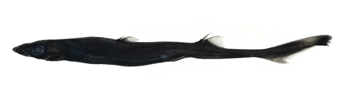

A dainty porcelain crab and a small shark with large eyes and a glowing belly are two of the newest inductees into the ranks of scientific recognition. Researchers identified both new species after collecting them during a research voyage off the west coast of Australia at depths of about 400 feet and more than 2,000 feet, respectively.
Both of the new species are rather diminutive—the adult shark specimen, with its bioluminescent belly and flanks, measured slightly more than 16 inches long, and the crab, which lives symbiotically inside invertebrates called sea pens, clocked in at about half an inch long. And they are just two of 20 newly identified organisms discovered since the cruise that collected them in 2022, which was led by scientists at Australia’s Commonwealth Scientific and Industrial Research Organisation (CSIRO). Other notable species include deep-sea scale worms, a Carnarvon flapjack octopus, and numerous deep-living sea stars.

A LIGHT IN THE DARKNESS: This newly described West Australian Lanternshark is the third new shark species described by scientists who were part of a 2022 research voyage just miles off the west coast of the continent. Image by the CSIRO Australian National Fish Collection.
That’s just the tip of the biodiversity iceberg. According to the CSIRO, “Researchers estimate that there are potentially up to 600 new species still waiting to be described from the voyage.”
The continuing identification of previously unknown species points to the mystery and fragility of the deep-sea habitats they call home. Across the globe, deep-sea ecosystems are not only ripe for scientific discovery, they’re being eyed by developers seeking to mine the bottom of the ocean for minerals. As Brandon Keim reported for Nautilus in 2023, almost two dozen companies have secured licenses to explore some 500,000 square miles of seafloor to assess its propensity for yielding cobalt, nickel, manganese, and copper.
With so much biodiversity emerging from one small patch of deep-sea just 12 miles off the coast of Western Australia from a single research cruise, the ecological riches hiding in the planet’s other swaths of unexplored ocean floor seem poised to be staggering. 
Lead image: CSIRO-Cindy Bessey